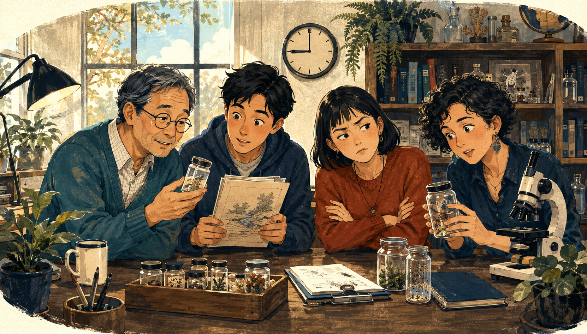

Your Case Board
Your next step.
Where the case stands, and what to do next. It shows the work saved on this computer. No scores.
Checking Julia…How to play
The case so far
The case so far
- The question
- Loading the case question…
- What we know so far
- Loading saved case history…
- Still to find out
- Loading…
- Why this next step
- Loading the next step…
Check this computer
Julia readiness
Connecting to the local Julia lab…
This fresh check makes sure Julia can run the mystery. It never installs software. R and Python are not needed to start the case, and this first check does not inspect them.
Check details
- Detected version
- Not checked yet
- Checked
- Not checked yet
- Reason code
- Not checked yet
Loading your saved work…
Six chapters, one case
The six chapters
Optional: the speed lab
The speed lab
Time the same calculation in Julia, R and Python. Not part of the case, no score.
It first checks that Julia, R, and Python return the same answers before timing the fixed local calculation.
Open the optional speed laboratoryWhat you found
What you found so far
Julia you have used so far